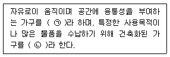
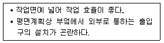
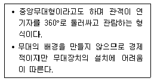
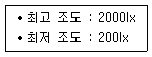
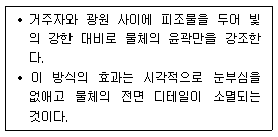
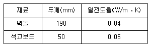

실내건축기사(구) (2015-05-31 기출문제)
1과목: 실내디자인론
1. 점에 관한 설명으로 옳지 않은 것은?
- 점을 연속해서 배열하면 선의 느낌을 받는다.
- 많은 점을 근접시켜 배열하면 면으로 느껴진다.
- 어떤 물체든지 확대하거나, 가까이서 보면 점으로 보인다.
- 나란히 있는 점의 간격에 따라 집합, 분리의 효과를 얻는다.
(정답률: 73%)

2. 천창에 관한 설명으로 옳지 않은 것은?
- 채광량이 많다.
- 전망과 통풍에 유리하다.
- 벽면을 다양하게 이용할 수 있다.
- 실내 조도 분포를 균일하게 할 수 있다.
(정답률: 82%)
3. 공간의 분할 중 심리∙도덕적 구획의 방법에 속하지 않는 것은?
- 커튼
- 낮은 칸막이
- 바닥면의 변화
- 천장면의 변화
(정답률: 74%)
4. 공간구성의 유형에 관한 설명으로 옳지 않은 것은?
- 선형 공간구성이란 일련의 공간의 반복으로 이루어진 선형적인 연속이다.
- 집합형 공간구성은 구심형 공간구성과 선형 공간구성의 두 가지 요소를 조합한 것이다.
- 구심형 공간구성은 중앙의 우세한 중심공간과 그 주위의 수많은 제2의 공간으로 이루어진다.
- 격자형 공간구성은 공간 속에서의 위치와 공간 상호간의 관계가 3차원적 격자 패턴 속에서 질서정연하게 배열되는 형태 및 공간으로 구성된다.
(정답률: 59%)
5. 실내디자인에 관한 설명으로 옳지 않은 것은?
- 실내디자인은 디자인요소를 반영하여 인간환경을 구축하는 작업이다.
- 실내디자인은 예술에 속하므로 미적인 관점에서만 그 성공여부를 판단할 수 있다.
- 실내다지인은 목적을 위한 행위이나 그 자체가 목적이 아니고 특정한 효과를 얻기 위한 수단이다.
- 실내디자인은 실내공간을 보다 편리하고 쾌적한 환경으로 창조해 내는 문제해결의 과정과 그 결과이다.
(정답률: 86%)
6. 오피스 랜드스케이프(office landscape)에 관한 설명으로 옳지 않은 것은?
- 소음이 발생하기 쉽다.
- 공간의 독립성이 확보되고 형태가 명확하다.
- 고정된 칸막이를 사용하지 않고 이동식을 사용한다.
- 변화하는 업무의 흐름이나 작업 패턴에 신속하게 대응할 수 있다.
(정답률: 87%)
7. 다음의 가구에 관한 설명 중 ( )안에 들어갈 말로 알맞은 것은?

- ㉠ 고정가구, ㉡ 가동가구
- ㉠ 이동가구, ㉡ 가동가구
- ㉠ 이동가구, ㉡ 붙박이가구
- ㉠ 붙박이가구, ㉡ 이동가구
(정답률: 87%)
8. 건축화조명 중 천장, 벽의 구조체에 의해 광원의 빛이 천장 또는 벽면으로 가려지게 하여 반사광으로 간접 조명하는 방식은?
- 코브 조명
- 밸런스 조명
- 코니스 조명
- 캐노피 조명
(정답률: 56%)
9. 다음 설명에 알맞은 주택 부엌가구의 배치 유형은?

- 일렬형
- ㄷ자형
- 병렬형
- ㄱ자형
(정답률: 85%)
10. 다음 중 시스템 가구의 디자인 조건과 가장 거리가 먼 것은?
- 가구는 비규격화된 디자인으로 한다.
- 인체공학에 의한 인체치수와 동작에 적합하도록 한다.
- 재배열과 교체가 용이하고, 이동 가능하도록 한다.
- 구성재와 결합시켜 통일과 조화를 꾀하며, 융통성을 크게 한다.
(정답률: 83%)
11. 실내디자인의 구성원리 중 규칙적인 요소들의 반복으로 디자인에 시각적인 질서를 부여하는 통제된 운동감각은?
- 비례
- 리듬
- 균형
- 통일
(정답률: 72%)
12. 상품 진열계획에서 고객에게 가장 편한 진열 높이를 말하는 골든 스페이스(golden space)의 범위는?
- 400～850mm
- 850～1250mm
- 1250～1500mm
- 1500～1800mm
(정답률: 86%)
13. 동선의 3요소에 속하지 않는 것은?
- 시간
- 하중
- 속도
- 빈도
(정답률: 59%)
14. 전시공간의 특수전시기법에 관한 설명으로 옳은 것은?
- 하모니카 전시는 통일된 전시내용이 규칙적으로나 반복적으로 나타날 때 적용이 용이하다.
- 파노라마 전시는 벽이나 천장을 직접 이용하지 않고 전시공간의 중앙에 전시물을 배치하는 전시 기법이다.
- 아일랜드 전시는 현장감을 가장 실감나게 표현하는 기법으로 한정된 공간 속에서 배경스크린과 실물의 종합 전시가 이루어진다.
- 디오라마 전시는 연속적인 주제를 연관성 깊게 표현하기 위해 선형으로 연출하는 전시기법으로 맥락이 중요하다고 생각될 때 사용된다.
(정답률: 67%)
15. 기하학적 형태에 관한 설명으로 옳지 않은 것은?
- 유기적 형태를 가진다.
- 인공적 형태의 특징을 느끼게 한다.
- 규칙적이며 단순 명쾌한 감각을 준다.
- 수학적인 법칙과 함께 생기며 뚜렷한 질서를 가진다.
(정답률: 60%)
16. 디자인의 원리에 관한 설명으로 옳은 것은?
- 객관적이고 과학적인 판단만이 중요하다.
- 다수의 사람들에 의한 보편적 객관성을 따른다.
- 점, 선, 척도, 비례, 조형, 조화, 통일 등을 포함한다.
- 조형요소를 결합하여 착시현상을 유도하는 것이 대부분이다.
(정답률: 46%)
17. 디자인 요소 중 패턴에 관한 설명으로 옳지 않은 것은?
- 인위적인 패턴의 구성은 반복을 명확히 함으로써만 이루어진다.
- 패턴을 취급할 때 중요한 것은 그 공간속에 있는 모든 패턴성을 갖는 것과의 조화방법이다.
- 연속성 있는 패턴은 리듬감이 생기는데 그 리듬이 공간의 성격이나 스케일과 맞도록 해야 한다.
- 패턴은 인위적으로 구성되는 것도 있으나 어떤 잔위화된 재료가 조합될 때 저절로 생기는 것이다.
(정답률: 66%)
18. 다음과 같은 특징을 갖는 극장의 평면형은?

- 가변형
- 애리나형
- 프로세니움형
- 오픈 스테이지형
(정답률: 83%)
19. 상점의 동선계획에 관한 설명으로 옳지 않은 것은?
- 판매원 동선은 가능한 한 짧게 만들어 일의 능률이 저하되지 않도록 한다.
- 고객 동선은 접근하기 쉽고 고객의 움직임이 자연스럽게 유도될 수 있도록 계획한다.
- 고객 동선은 고객이 원하는 곳으로 바로 접근 할 수 있도록 가능한 한 짧게 계획한다.
- 관리 동선은 사무실을 중심으로 종업원실, 창고, 매장등이 최단거리로 연결되도록 한다.
(정답률: 85%)
20. 상점 매장의 상품구성과 배치에 관한 설명으로 옳지 않은 것은?
- 중점상품은 주통로에 접하는 부분에 배치한다.
- 전략상품은 상점 내에서 가장 눈에 잘 띄는 곳에 배치한다.
- 고객을 위한 휴게시설은 충동구매상품과 격리하여 배치한다.
- 진열대가 굴절 또는 곡선으로 처리된 곳에는 소형 상품을 배치한다.
(정답률: 78%)
2과목: 색채학
21. 대비현상과는 달리 인접된 색과 닮아 보이는 현상은?
- 잔상현상
- 퇴색현상
- 동화현상
- 연상감정
(정답률: 86%)
22. 채도에 관한 설명 중 틀린 것은?
- 색이 순수할수록 채도가 높고, 탁하거나 흐릴수록 채도가 낮다.
- 무채색이 포함되지 않은 색이 채도가 가장 높고 이를 순색이라 한다.
- 순색에 흰색을 섞는 양이 많아질수록 채도는 높아진다.
- 무채색은 채도가 없다.
(정답률: 77%)
23. 감법혼색으로 틀린 것은?
- magenta + yellow = red
- cyan + magenta = blue
- yellow + cyan = green
- yellow + blue = white
(정답률: 81%)
24. JPG와 GIF의 장점만을 가진 포맷으로 트루컬러를 지원하고 비손실 압축을 사용하여 이미지 변형 없이 원래 이미지를 웹상에 그대로 표현할 수 있는 포맷 형식은?
- PCX
- BMP
- PNG
(정답률: 82%)
25. 잔상에 관한 설명으로 잘못된 것은?
- 시신경이나 뇌의 이상으로 원래의 자극과 다른 감각을 일으키는 현상이다.
- 어떤 자극에 의해 원자극과 동질 또는 이질의 감각경험을 일으키는 현상이다.
- 망막의 흥분 상태의 지속성에 기인하는 현상이다.
- 충동이 시신경에 발한 그대로 계속되고 있는 결과이다.
(정답률: 58%)
26. 색채조화의 공통 원리가 아닌 것은?
- 질서의 원리
- 유사성의 원리
- 친근성의 원리
- 혼합의 원리
(정답률: 74%)
27. 분광광도계를 이용하여 색편의 분광반사율을 측정했을 때 가장 정확하게 색좌표가 계산되는 색체계는?
- Munsell 색체계
- Hering 색체계
- CIE 색체계
- Ostwald 색체계
(정답률: 70%)
28. 디지털 색채의 유형 중 RGB 형식에 대한 설명으로 옳은 것은?
- 인쇄물이나 그림과 같이 컬러 재생 매체에 사용된다.
- 3가지 기본색인 빨강(red), 초록(green), 파랑(blue)을 모두 100%씩 혼합하면 검은색이 된다.
- 감법혼색으로 2차색은 원색보다 어두워진다.
- 컴퓨터 화면의 스크린은 24비트 색배열 조정장치를 사용할 경우 최대 약 1677만 가지의 색을 만들어낼 수있다.
(정답률: 64%)
29. 스피드감을 내는 자동차의 배색으로 가장 적합한 것은?
- 저명도의 장파장색
- 중명도의 단파장색
- 고명도의 장파장색
- 고명도의 단파장색
(정답률: 75%)
30. 오스트발트 색체계에 관한 설명으로 틀린 것은?
- 노랑을 기준으로 전체 24색상으로 이루어져 있다.
- 톤은 무채색을 제외하고 각 색상 당 28색으로 이루어져 있다.
- 원래 색채의 배색을 위한 조화를 목적으로 제작되었다.
- 색체조화메뉴얼(CHM)에는 모두 40색상으로 구성된다.
(정답률: 44%)
31. 물체색에 대한 설명 중 틀린 것은?
- 빛을 대부분 반사시키면 흰색이 된다.
- 빛을 완전히 흡수하면 이상적인 검정색이 된다.
- 빛의 일부는 반사하고 일부는 흡수하면 회색이 된다.
- 빛의 반사율은 0%～100%가 현실적으로 존재한다.
(정답률: 69%)
32. 먼셀 색체계에서 색상기호 앞에 붙는 숫자로 각 색상의 대표 색상을 의미하는 숫자는?
- 2
- 5
- 8
- 3
(정답률: 82%)
33. 맥스웰 디스크(Maxwell's Disk)와 관계가 있는 것은?
- 병치혼합
- 회전혼합
- 감산혼합
- 색료혼합
(정답률: 73%)
34. 먼셀 색체계의 색표기 방법 중 명도가 가장 높은 색은?
- 2.5R 2/8
- 10R 9/1
- 5R 4/14
- 7.5Y 7/12
(정답률: 68%)
35. 우리 눈에서 무채색의 지각뿐 아니라 유채색의 지각도 함께 일으키는 능력은 어디서 이루어지는가?
- 추상체
- 간상체
- 수정체
- 홍채
(정답률: 67%)
36. 색채계획의 과정에서 색채 심리 분석에 해당하지 않는 것은?
- 색채 이미지 측정
- 유행 이미지 측정
- 상품 이미지 측정
- 경영 이미지 측정
(정답률: 61%)
37. 2개 이상의 색을 혼합할 때 혼합되는 색의 수가 많을수록 명도가 높아지는 경우의 혼합은?
- 감산혼합
- 중간혼합
- 병치혼합
- 가산혼합
(정답률: 75%)
38. 배색에 대한 설명으로 틀린 것은?
- 화려하고 강렬한 느낌을 위해서는 색상차를 크게 하여 배색한다.
- 채도차가 큰 배색은 면적을 조절하여 안정감을 주어야 한다.
- 유사색상 배색 시에는 명도차, 채도차를 비슷하게 하여 조화되게 한다.
- 명쾌한 배색이 되기 위해서는 명도차를 크게 하여 배색한다.
(정답률: 37%)
39. 헤링의 4원색이 아닌 것은?
- Blue
- Yellow
- Purple
- Green
(정답률: 79%)
40. 오스트발트 색채조화에서 gc –lg - pl의 기호는 어떤 조화에 해당하는가?
- 등백계열조화
- 등흑계열조화
- 등순계열조화
- 무채색의 조화
(정답률: 65%)
3과목: 인간공학
41. 다음 중 인간의 눈에 대한 설명으로 옳은 것은?
- 망막을 구성하고 있는 감광요소 중 간상세포는 색의 구분을 담당한다.
- 황반 부위에는 간상세포가 집중적으로 분포되어 있다.
- 시각이란 보는 물체에 의한 눈에서의 대각이며, 일반적으로 분(′)단위로 나타낸다.
- 시력은 시각 1분의 역자승수를 표준단위로 사용한다.
(정답률: 65%)
42. 다음 중 소리와 청각에 대한 설명으로 적절하지 않은 것은?
- 기온이 오르면 소리의 전달속도가 감소한다.
- 2가지 음의 주파수 비율이 2 : 1일 때 이것을 1옥타브라 한다.
- 인간의 감각은 일반적으로 주파수가 낮은 음보다 높은 음이 감도가 좋다.
- 점음원으로부터의 단위면적당 출력은 반사나 굴절이 없는 한 거리의 제곱에 반비례하여 작아진다.
(정답률: 60%)
43. 정보량의 계산에서 어떤 계기판에 램프가 4개가 있고 그 중 하나에만 불이 켜지는 경우와 같이 4개의 대안이 있을 경우의 정보량(bit)은 얼마인가?
- 1
- 2
- 3
- 4
(정답률: 62%)
44. 다음 중 소음원에 대한 소음의 제어로 가장 적절한 것은?
- 해당 설비의 진동량이나 진동 부분을 조정하여 감소 시킨다.
- 고주파 소음을 내는 장치를 사용한다.
- 저주파 소음은 고주파의 소음보다 방향성이 크므로 차폐물 또는 방해물을 설치한다.
- 대형 저속송풍기보다 소형고속 송풍기를 설치한다.
(정답률: 71%)
45. 다음 중 신체 부위의 운동 형태와 그 예를 바르게 나열한 것은?
- 조작동작 : 망치질하기
- 연속동작 : 부품이나 공구잡고 있기
- 반복동작 : 자동차 핸들의 조종하기
- 계열동작 : 피아노 연주나 타이핑하기
(정답률: 73%)
46. 다음 중 시(視)식별에 영향을 미치는 요소와 가장 관계가 적은 것은?
- 조도
- 대비
- 이동
- 반응시간5
(정답률: 59%)
47. 다음 중 1촉광의 점광원으로부터 1m 떨어진 곡면에 비추는 광의 밀도를 나타내는 단위는?
- lux
- lambert
- lumen
- foot-candle
(정답률: 50%)
48. 다음 중 진동이 인간성능에 끼치는 일반적인 영향으로 틀린 것은?
- 안정되고 정확한 근육 조절을 요하는 작업은 진동에 의해서 그 능력이 저하된다.
- 진동은 진폭에 비례하여 시력을 손상시킨다.
- 진동은 진폭에 비례하여 추적 능력을 손상하며 낮은 진동수에서 가장 심하다.
- 반응시간, 형태 식별 등 주로 중앙 신경처리에 달린임무는 진동의 영향을 많이 받는다.
(정답률: 58%)
49. 다음 중 부품의 일반적인 위치를 정할 때 적용하는 부품 배치의 원칙으로만 나열된 것은?(오류 신고가 접수된 문제입니다. 반드시 정답과 해설을 확인하시기 바랍니다.)
- 중요성의 원칙, 사용빈도의 원칙
- 중요성의 원칙, 공정순서의 원칙
- 기능별 배치의 원칙, 부품크기의 원칙
- 기능별 배치의 원칙, 사용공정의 원칙
(정답률: 62%)
50. 인체계측에 있어서 구조적 인체치수에 관한 설명으로 가장 올바른 것은?
- 표준자세에서 움직이지 않는 피측정자를 대상으로 신체의 각 부위를 측정한다.
- 신체의 각 부위간에 수행하는 기능에 따라 영향을 받으며 여러 가지 변수가 내재해 있다.
- 손을 뻗어 잡을 수 있는 한계는 팔길이 만의 함수가 아니고 어깨 움직임, 몸통 회전, 등 구부림 등에 의해서도 영향을 받는다.
- 신체적 기능을 수행할 때 각 신체부위가 독립적으로 움직이는 것이 아니라 서로 조화를 이루어 움직이기 때문에 이 치수가 사용된다.
(정답률: 53%)
51. 다음 중 시각 표시장치 설계에 따른 특성을 설명한 것으로 틀린 것은?
- 수치를 정확히 읽어야 할 경우는 계수형(計數型, digital) 표시장치가 적합하다.
- 계수형 표시장치의 판독오차는 원형 표시장치보다 많다.
- 동침형(動針型, moving pointer) 표시장치는 인식적인 암시 신호(cue)를 준다.
- 사각 개창형(開窓型)이나 수직, 수평형태 동목형(動目型, moving scale)이 동침형(動針型, moving pointer)에 비해 계기반의 공간을 적게 차지한다.
(정답률: 65%)
52. 손의 기본 지각기능에서 정보수집의 종류와 거리가 가장 먼 것은?
- 입체식별 기능
- 중량식별 기능
- 색 식별 기능
- 경도식별 기능
(정답률: 83%)
53. 조명방법 중 간접조명에 관한 설명으로 옳은 것은?
- 작업상 필요한 장소만 조명하는 방법이다.
- 효율이 좋으나 음영이 생기기 쉽다.
- 광원을 천장에 매달기 때문에 파손의 위험이 적으나 전력소비량이 많다.
- 광이 천장면이나 벽면에 부딪친 다음 반사된 광선이 조명면에 비치는 방법이다.
(정답률: 71%)
54. 다음 중 조종-반응 비율(C/R 비)에 대한 설명으로 틀린 것은?
- 표시장치의 이동거리에 대한 조종장치를 이동한 거리의 비율이다.
- C/R 비가 클수록 조종장치는 민감하다.
- 최적 C/R 비는 조정시간과 이동시간의 합이 최소가 되는 점을 가리킨다.
- C/R 비가 낮을수록 조정시간은 오래 걸린다.
(정답률: 67%)
55. 다음 중 자동차 제동페달을 효율적으로 사용하기 위해서는 대퇴부와 경부의 각도를 어느 정도 유지하는 것이 가장 적절한가?
- 90도
- 180도
- 120도
- 150도
(정답률: 73%)
56. 다음 중 제품디자인에 있어 인간 공학적인 고려대상으로 볼 수 없는 것은?
- 인간의 성능 향상
- 사용 편리성의 향상
- 하드웨어의 신뢰성 향상
- 개인차를 고려한 디자인
(정답률: 69%)
57. 다음 중 경계 및 경보 신호의 선택 또는 설계시 고려할 사항으로 적절하지 않은 것은?
- 배경 소음과는 다른 주파수를 사용한다.
- 주위를 끌기 위하여 변조된 신호를 사용하지 않는다.
- 높은 주파수의 신호는 멀리가지 못하므로 장거리용의 신호는 1000Hz 이하의 주파수를 사용한다.
- 신호가 장애물을 돌아가거나 칸막이를 통과할 때는 500Hz 이하의 진동수를 사용한다.
(정답률: 57%)
58. 간판의 바탕색이 80%의 반사도를 가지며, 글씨가 10%의 반사도를 가질 때 대비(contrast)는 몇 % 인가?
- 77.8
- 85.7
- 87.5
- 88.9
(정답률: 53%)
59. 다음 중 후각에 관한 설명으로 옳은 것은?
- 후각의 민감도는 특정 물질과 그 냄새를 맡는 사람들에게 일정한 경향을 나타낸다.
- 후각은 많은 자극 중 하나를 식별하는데 보다 냄새의 존재를 탐지하는데 효과적이다.
- 강도차만 있는 냄새의 경우 15～20 수준 정도를 식별할 수 있다.
- 특정한 냄새를 절대적으로 식별하는 데에는 뛰어나다.
(정답률: 72%)
60. 다음 중 인체 골격의 주요 기능이 아닌 것은?
- 조혈 작용
- 체내의 장기보호
- 신체의 지지 및 형상 유지
- 수축과 이완을 통한 관절의 움직임
(정답률: 66%)
4과목: 건축재료
61. 목재의 수축팽창에 관한 설명 중 옳지 않은 것은?
- 변재는 심재보다 수축률 및 팽창률이 일반적으로 크다.
- 섬유포화점 이상의 함수상태에서는 함수율이 클수록 수축률 및 팽창률이 커진다.
- 수종에 따라 수축률 및 팽창률에 상당한 차이가 있다.
- 수축이 과도하거나 고르지 못하면 할열, 비틀림 등이 생긴다.
(정답률: 75%)
62. 다음 미장재료 중 공기 중의 탄산가스와 반응하여 경화하는 것은?
- 돌로마이트 플라스터
- 시멘트 모르타르
- 석고 플라스터
- 킨스 시멘트
(정답률: 70%)
63. 다음 중 해수에 접하는 구조물에 가장 적합한 시멘트는?
- 보통포틀랜드 시멘트
- 조강포틀랜드 시멘트
- 고로 시멘트
- 중용열포틀랜드 시멘트
(정답률: 54%)
64. 목재용 방화제의 종류에 해당되지 않는 것은?
- 방화페인트
- 규산나트륨
- 불화소다 2% 용액
- 제2 인산암모늄
(정답률: 50%)
65. 아스팔트 방수 재료에 관한 설명으로 옳지 않은 것은?
- 아스팔트 루핑은 펠트의 양면에 블로운 아스팔트를 피복하고, 그 표면에 가는 모래나 광물질 미분말을 부착한 시트상의 제품이다.
- 개량아스팔트 방수시트는 주로 토치버너의 가열에 의해 공사가 이루어진다.
- 아스팔트 프라이머는 콘크리트 바탕과 방수시트의 접착을 양호하게 유지하기 위한 바탕조정용 접착제이다.
- 망상 아스팔트 루핑은 아스팔트의 절연 공법에 사용된다.
(정답률: 48%)
66. 점토소성제품에 관한 설명으로 옳지 않은 것은?
- 보통 토기, 도기, 자기 및 석기 등으로 나뉘는데, 이들은 원료 및 소성온도에 따라 분류된다.
- 토기는 주로 마루타일 또는 클링커 타일로 활용된다.
- 도기의 흡수성은 자기에 비하여 크다.
- 자기는 조직이 치밀하고 견고하여 주로 타일 및 위생 도기로 많이 사용된다.
(정답률: 76%)
67. 합성수지의 일반적인 성질에 대한 설명으로 틀린 것은?
- 전성, 연성이 크고 피막이 강하다.
- 접착성이 크고 기밀성, 안정성이 큰 것이 많다.
- 마모가 적고 탄력성이 작다.
- 착색이 자유롭고 투수성이 없다.
(정답률: 63%)
68. 화강암에 대한 설명으로 틀린 것은?
- 주요구성 광물은 석영, 장석, 운모이다.
- 고온의 화재에도 강도저하가 적은 내화재료이다.
- 결정체의 크고 작음에 따라 외관과 강도가 다르다.
- 국내 매장량이 풍부하여 바닥재, 내∙외장재 등에 많이 사용된다.
(정답률: 61%)
69. 굳지 않은 콘크리트의 워커빌리티에 영향을 주는 요소와 가장 거리가 먼 것은?
- 시멘트의 강도
- 단위수량
- 골재의 입도 및 입형
- 혼화재료
(정답률: 54%)
70. 다음 중 건축용 단열재와 거리가 먼 것은?
- 유리면(glass wool)
- 암면(rock wool)
- 펄라이트판
- 테라코타
(정답률: 74%)
71. 고도로 정쇄된 원료에 의한 것으로 밀도가 균일하기 때문에 측면의 가공성이 매우 좋고, 표면에 무늬인쇄가 가능한 것은?
- 중밀도 섬유판
- 파티클 보드
- 침엽수 제재목
- 합판
(정답률: 59%)
72. 굳지 않은 콘크리트의 성질 중 굵은 골재의 분리에 영향을 주는 인자와 거리가 먼 것은?
- 골재의 강도
- 골재의 종류
- 단위수량
- 골재의 입형
(정답률: 49%)
73. 다음 합성수지 중 내열성이 가장 우수한 것은?
- 염화비닐수지
- 폴리에틸렌 수지
- 실리콘 수지
- 아크릴 수지
(정답률: 62%)
74. 내화벽돌의 주원료 광물에 해당되는 것은?
- 형석
- 방해석
- 활석
- 납석
(정답률: 50%)
75. 유리가 불화수소에 부식하는 성질을 이용하여 5mm이상 판유리면에 그림, 문자 등을 새긴 유리는?
- 스테인드유리
- 망입유리
- 에칭유리
- 내열유리
(정답률: 76%)
76. 스프레이 건(spray gun)을 사용해서 표면마감을 할 때 가장 유리한 도료는?
- 래커
- 바니쉬
- 유성페인트
- 에나멜
(정답률: 75%)
77. 각종 접착제에 관한 설명 중 옳지 않은 것은?
- 동물질 아교는 비교적 접착력이 크고 취급하기 용이 하나 내수성이 부족하다.
- 페놀수지 접착제는 목재, 금속, 플라스틱 및 이들 이종재(異種材)간의 접착에 사용된다.
- 에폭시수지 접착제는 목재, 석재의 접합에는 적당하나금속 접합에는 사용할 수 없다.
- 비닐수비 접착제는 내열성, 내수성이 떨어져 옥외 사용에는 적당하지 않다.
(정답률: 73%)
78. 콘크리트의 건조수축에 관한 설명 중 옳지 않은 것은?
- 골재로서 사암이나 점판암을 이용한 콘크리트는 수축량이 크고, 석영 ㆍ 석회암 ㆍ 화강암을 이용한 것은 적다.
- 콘크리트 습윤양생기간의 장단은 건조수축에 그다지 큰 영향을 주지 않는다.
- 골재 중에 포함된 미립분이나 점토, 실트는 일반적으로 건조수축을 증대시킨다.
- 단위수량이 증가되면 수축량은 감소한다.
(정답률: 42%)
79. 다음 특수유리와 사용 장소의 조합이 적절하지 않은 것은?
- 병원의 일광욕실 - 자외선투과유리
- 진열용 창 - 무늬유리
- 채광용 지붕 - 프리즘 유리
- 형틀 없는 문 - 강화유리
(정답률: 65%)
80. 조이너(joiner)에 관한 설명으로 옳은 것은?
- 벽, 기둥 등의 모서리에 미장 바름의 보호 목적으로 사용
- 인조석깔기에서 신축균열방지나 의장효과의 목적으로 사용
- 천장에 보드를 붙인 후 그 이음새를 감추는 목적으로 사용
- 환기구멍이나 라디에이터 덮개의 목적으로 사용
(정답률: 80%)
5과목: 건축일반
81. 조적조의 줄눈에 대한 일반적인 설명으로 옳은 것은?
- 보강블록조에서는 통줄눈은 사용하지 않는다.
- 벽면이 고르지 않을 때는 오목줄눈으로 한다.
- 벽돌의 형태가 고르지 않을 때는 민줄눈으로 한다.
- 막힌줄눈은 상부의 하중을 전벽면에 골고루 균등하게 분포시킨다.
(정답률: 50%)
82. 문화 및 집회시설 중 공연장의 각층별 바닥면적이 1,500m2이고 각층별 거실면적이 1,000mm2일 때, 이 공연장에 설치하여야 하는 승용승강기의 최소 대수는? (단, 공연장의 층수는 10층이며, 8인승 승강기 적용)
- 3대
- 4대
- 5대
- 6대
(정답률: 43%)
83. 국민안전처장관, 소방본부장 또는 소방서장은 소방특별조사를 하려면 얼마 전에 관계인에게 조사대상, 조사기간 및 조사사유 등을 서면으로 알려야 하는가?
- 1일 전
- 3일 전
- 5일 전
- 7일 전
(정답률: 76%)
84. 물분무등소화설비를 설치하여야 할 차고 ㆍ 주차장에 어떤 소방시설을 화재안전기준에 적합하게 설치하면 물분무등소화설비를 면제받을 수 있는가?
- 옥내소화전설비
- 연결송수관설비
- 자동화재탐지설비
- 스프링클러설비
(정답률: 75%)
85. 건축물의 3층 이상의 층에 직통계단 외에 그 층으로부터 지상으로 통하는 옥외피난계단을 따로 설치하여야 하는 용도의 기준으로 옳지 않은 것은?
- 제2종 근린생활시설 중 공연장(해당용도로 쓰는 바닥면적의 합계가 300m2 이상인 경우)의 용도에 쓰이는 층으로서 그 층 거실 바닥면적의 합계가 300m2 이상인 것
- 위락시설 중 주점영업의 용도에 쓰이는 층으로서 그층 거실 바닥면적의 합계가 400m2 이상인 것
- 문화 및 집회시설 중 공연장의 용도로 쓰이는 층으로서 그 층의 거실의 바닥면적의 합계가 300m2 이상인 것
- 문화 및 집회시설 중 집회장의 용도에 쓰이는 층으로서 그 층의 거실의 바닥면적의 합계가 1,000m2 이상인것
(정답률: 37%)
86. 철근콘크리트 슬래브에서 휨 주철근의 간격 기준으로 옳은 것은? (단, 콘크리트 장선구조가 아닌 경우)
- 슬래브 두께의 4배 이하, 또한 450mm 이하
- 슬래브 두께의 4배 이하, 또한 600mm 이하
- 슬래브 두께의 3배 이하, 또한 450mm 이하
- 슬래브 두께의 3배 이하, 또한 600mm 이하
(정답률: 47%)
87. 단독주택 및 공동주택의 거실에 환기를 위하여 설치하는 창문 등의 면적은 최소 얼마 이상이어야 하는가? (단, 기계환기장치 및 중앙관리방식의 공기조화 설비를 설치하지 않은 경우)
- 거실 바닥면적의 5분 1
- 거실 바닥면적의 10분 1
- 거실 바닥면적의 15분의 1
- 거실 바닥면적의 20분의 1
(정답률: 67%)
88. 다음 중 소화활동설비에 속하지 않는 것은?
- 연결송수관 설비
- 스프링클러 설비
- 연결살수 설비
- 비상콘센트 설비
(정답률: 49%)
89. 전통가옥의 명칭에 따른 설명으로 틀린 것은?
- 굴피집 : 소나무를 켜서 나무토막을 지붕에 덮은 집
- 초가집 : 짚으로 엮은 이엉을 지붕에 덮은 집
- 샛집 : 들이나 산에서 나는 야생풀을 지붕에 덮은 집
- 기와집 : 제작된 기와를 지붕에 덮은 집
(정답률: 62%)
90. 다음 중 목조건축물의 내진(耐震)설계에 있어서 가장 중요한 것은?
- 기초의 구조형태
- 마감재의 형태와 치수
- 가새의 배치법과 치수
- 지붕의 구조와 형태
(정답률: 65%)
91. 공동주택과 오피스텔의 난방설비를 개별난방방식으로 하는 경우의 기준으로 옳지 않은 것은?
- 보일러실의 윗부분에는 그 면적이 0.2m2 이상인 환기창을 설치한다.
- 보일러실의 윗부분과 아랫부분에는 각각 지름 10cm이상의 공기흡입구 및 배기구를 항상 열려 있는 상태로 바깥공기에 접하도록 설치한다. (단, 전기보일러의 경우는 제외)
- 기름보일러를 설치하는 경우에는 기름저장소를 보일러실 외의 다른 곳에 설치한다.
- 보일러의 연도는 내화구조로서 공동연도로 설치한다.
(정답률: 48%)
92. 목구조에 사용하는 이음과 맞춤에 대한 설명으로 옳은 것은?
- 이음과 맞춤은 공작이 복잡한 것을 쓰고 모양에 치중한다.
- 이음과 맞춤의 단면은 응력의 방향에 수평으로 한다.
- 이음과 맞춤은 응력이 많이 작용하는 곳에서 만든다.
- 이음과 맞춤 부재는 가급적 적게 깍아내어 약하게 되지 않게 한다.
(정답률: 72%)
93. 건축법상 승용승강기를 설치하여야 하는 대상건축물의 선정 기준은?
- 건축물의 용도와 거실바닥면적
- 층수와 연면적
- 층수와 거실바닥면적의 합계
- 건축물의 용도와 연면적
(정답률: 45%)
94. 철근콘크리트 압축부재에서 띠철근의 수직간격을 결정하는데 직접적으로 관계가 없는 것은?
- 주근의 지름
- 띠철근의 지름
- 골재의 지름
- 기둥단면의 최소폭
(정답률: 55%)
95. 르네상스에 관한 설명 중 옳지 않은 것은?
- 이탈리아에서 발생하여 각지에 전파되었다.
- 양식의 특징은 포인티드 아치, 프라잉 버트레스, 리브볼트로 압축될 수 있다.
- 인본주의에서 출발하였다.
- 중세 때보다 훨씬 광범위하게 가구가 사용되었다.
(정답률: 62%)
96. 건축허가 등을 할 때 미리 소방본부장 또는 소방서장의 동의를 받아야 하는 건축물에 해당되는 것은?
- 연면적이 300m2인 업무시설
- 승강기 등 기계장치에 의해 자동차 15대를 주차할 수 있는 주차시설
- 항공관제탑
- 지하층이 있는 건축물로 바닥면적 80m2 인 층이 있는 것
(정답률: 69%)
97. 특정소방대상물에 피난기구를 반드시 설치하여야 하는 층은?
- 지상 1층
- 지상 2층
- 지상 6층
- 지상 11층
(정답률: 53%)
98. 건축물의 피난층 외의 층에서 피난층 또는 지상으로 통하는 직통계단은 거실의 각 부분으로부터 계단에 이르는 보행거리가 최대 얼마 이하가 되도록 설치하여야 하는가? (단, 주요구조부가 내화구조 또는 불연재료로 된건축물)
- 30m
- 40m
- 50m
- 60m
(정답률: 33%)
99. 목구조에서 서까래, 장선 등에 사용하는 이음은?
- 빗이음
- 겹친이음
- 엇빗이음
- 턱걸이 주먹장이음
(정답률: 44%)
100. 피뢰설비 설치기준으로 옳지 않은 것은?
- 피뢰설비의 재료는 최소 단면적이 피복이 없는 동선을 기준으로 수뢰부, 인하도선 및 접지극은 30mm2 이상이거나 이와 동등 이상의 성능을 갖출 것
- 돌침은 건축물의 맨 윗부분으로부터 25cm 이상 돌출시켜 설치하되,「건축물의 구조기준 등에 관한 규칙」제9조에 따른 설계하중에 견딜 수 있는 구조일 것
- 피뢰설비는 한국산업표준이 정하는 피뢰레벨 등급에 적합한 피뢰설비일 것
- 피뢰설비의 인하도선을 대신하여 철골조의 철골구조물과 철근콘크리트조의 철근구조체 등을 사용하는 경우에는 전기적 연속성이 보장될 것
(정답률: 38%)
6과목: 건축환경
101. 공기조화방식 중 이중덕트방식에 관한 설명으로 옳지 않은 것은?
- 전공기방식의 특성이 있다.
- 혼합상자에서 소음과 진동이 생긴다.
- 부하특성이 다른 다수의 실이나 존에는 적용 할 수 없다.
- 냉ㆍ온풍의 혼합으로 인한 혼합손실이 있어서 에너지 소비량이 많다.
(정답률: 57%)
102. 어느 실내에서 수평면 조도를 측정하여 다음 값을 얻었다. 이 실의 균제도는?

- 0.1
- 2
- 4
- 10
(정답률: 41%)
103. 건축물의 에너지절약을 위한 계획 방법으로 옳지 않은 것은?
- 공동주택은 인동간격을 넓게 하여 저층부의 일사 수열량을 증대시킨다.
- 건축물은 대지의 향, 일조 및 주풍향 등을 고려하여 배치하며, 남향 또는 남동향 배치를 한다.
- 건축물의 체적에 대한 외피면적의 비 또는 연면적에 대한 외피면적의 비는 가능한 크게 한다.
- 거실의 층고 및 반자 높이는 실의 용도와 기능에 지장을 주지 않는 범위 내에서 가능한 낮게 한다.
(정답률: 72%)
104. 온수난방에 관한 설명으로 옳은 것은?
- 한랭지에서 동결의 우려가 없다.
- 예열부하가 없어 간헐운전에 적합하다.
- 증기난방에 비해 예열시간이 길게 소요된다.
- 증기난방에 비해 부하변동에 따른 실내 방열량 제어가 곤란하다.
(정답률: 69%)
1⑤. 다음 중 옥내조명의 설계에서 가장 먼저 이루어지는 작업은?
- 광원의 선정
- 소요조도의 결정
- 조명방식의 결정
- 조명기구 배치의 결정
(정답률: 78%)
106. 용적 3,000m3, 잔향시간 1.6초인 실이 있다. 잔향시간을 0.6초로 조정하려고 할 때, 이 실에 추가로 필요한 흡음력은? (단, sabine의 식을 이용)
- 약 500m2
- 약 600m2
- 약 700m2
- 약 800m2
(정답률: 39%)
107. 다공질재 흡음재료에 관한 설명으로 옳지 않은 것은?
- 주파수가 낮을수록 흡음률이 높아진다.
- 표면마감처리방법에 의해 흡음 특성이 변한다.
- 두께를 늘리면 저주파수의 흡음률이 높아진다.
- 강성벽 앞면의 공기층 두께를 증가시키면 저주파수의 흡음률이 높아진다.
(정답률: 50%)
108. 0.5L의 물을 5℃에서 60℃로 올리는데 필요한 열량은? (단, 물의 비열은 4.2kJ/kg ㆍ K, 물의 밀도는 1kg/L이다.)
- 63.0kJ
- 115.5kJ
- 127.5kJ
- 180.0kJ
(정답률: 46%)
109. 열전도율에 관한 설명으로 옳지 않은 것은?
- 기체는 고체보다 열전도율이 작다.
- 액체는 고체보다 열전도율이 작다.
- 철근콘크리트의 열전도율은 강재보다 작다.
- 열전도율이 크면 클수록 열전도저항도 커진다.
(정답률: 62%)
110. 다음 중 건물증후군(Sick Building Syndrome)과 가장 밀접한 관계가 있는 것은?
- VOCs
- 기온
- 습도
- 일사량
(정답률: 70%)
111. 실내에 있어서 인체 표면과 벽∙천장∙바닥면 등 주벽면과의 열복사가 재실자의 쾌적감에 미치는 영향을 측정하기 위하여 Vernon에 의해 고안된 온도계는?
- 자기 온도계
- 카타 온도계
- 글로브 온도계
- 아스만 온도계
(정답률: 56%)
112. 다음의 자동화재탐지설비의 감지기 중 연기 감지기에 속하는 것은?
- 광전식
- 보상식
- 차동식
- 정온식
(정답률: 48%)
113. 마스킹(masking) 효과에 관한 설명으로 옳은 것은?
- 초기 반사음보다 늦게 도래하는 반사음의 효과
- 입사음의 진동수가 벽의 진동수와 일치되어 같은 소리를 내는 현상
- 어떤 음의 방해로 인하여 다른 음에 대한 가청 임계값이 증가하는 현상
- 음파가 어떤 매질을 진행할 때 다른 매질의 경계면에 도달하여 진행방향이 변하는 현상
(정답률: 62%)
114. 다음의 급수방식 중 일반적으로 하향급수 배관 방식을 사용하는 것은?
- 수도직결방식
- 고가수조방식
- 압력수조방식
- 펌프직송방식
(정답률: 72%)
115. 여름철 일사를 받는 대공간인 아트리움에서 주로 발생하는 자연환기의 종류는?
- 풍속차에 의한 환기
- 개구부 틈새에 의한 환기
- 사람의 호흡에 의한 환기
- 공기의 밀도차에 의한 환기
(정답률: 67%)
116. 다음 설명에 알맞은 조명기법은?

- 실루엣 기법
- 음영연출기법
- 광선연출기법
- 월 워싱 기법
(정답률: 79%)
117. 다음과 같은 재료로 구성된 벽체의 열관류율은? (단, 벽체의 내표면 열전달률은 8.3W/m2∙K, 외표면 열전달률은 16.6W/m2∙K 이다.)

- 0.02W/m2∙K
- 0.04W/m2∙K
- 0.52W/m2∙K
- 0.71W/m2∙K
(정답률: 26%)
118. 음의 대소를 나타내는 감각량을 음의 크기라고 한다. 음의 크기의 단위는?
- dB
- lm
- sone
- phon
(정답률: 58%)
119. 굴뚝효과(stack effect)의 가장 주된 발생원은?
- 온도차
- 유속차
- 습도차
- 풍향차
(정답률: 76%)
120. 채광방식 중 측창채광에 관한 설명으로 옳지 않은 것은?
- 천창채광에 비해 비막이에 유리하다.
- 근린의 상황에 의한 채광 방해의 우려가 있다.
- 편측채광의 경우 실내 조도분포가 불균일하다.
- 동일 면적의 천창채광에 비해 채광량이 3배 정도 많다.
(정답률: 78%)
어떤 물체든지 확대하거나, 가까이서 보면 점으로 보이는 이유는, 물체의 표면을 이루는 입자들이 너무 작아서 인간의 눈으로는 구별하기 어렵기 때문이다. 따라서, 눈에 보이는 것은 그 입자들의 집합 중에서 가장 작은 단위인 점으로 인식되는 것이다.